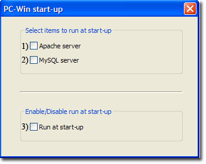
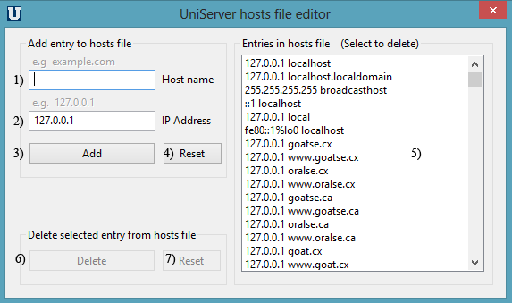

|
|
Extra Utilities |
The UniController Extra menu groups additional utilities that do not easily fit into other categories.
PC-Win start-up
This menu option is the only one that writes data to the registry. Hence, it is not truly portable. It allows you to automatically run UniController and optionally Apache and MySQL servers when you start your computer.
Open PC-Win start-up menu and configure as follows:
|
Extra > PC-Win start-up
Note: UniController is automatically run when Run at start-up is enabled, while items (1) and (2) are optional (enable/disable as desired). |
 |
The above uses command line parameter pc_win_start to automatically control the servers. UniController supports other command line parameters; see page Command Line Parameters for details.
Manual Alternative
The following are manual instructions that replicate options (1) and (2) above.
Edit file: C:\UniServerZ\home\us_config\us_config.ini and change the following section as appropriate:
[PCSTARTUP] RunAtPcStartUpEnabled=false RunApacheAtStartUp=false RunMysqlAtStartUp=false
The following are manual instructions that replicate option (3) above.
Enable run at start-up
- Open Run command box by pressing Windows logo + R keys. In the Run command field, type Shell:startup and then press Enter key to open Startup folder.
- In the right pane, right-click anywhere, select New and then Shortcut.
- Click Browse... and navigate to C:\UniServerZ\UniController.exe (update path as appropriate). Click OK and Next.
- Click Finish to complete the process.
Disable run at start-up
- Open Run command box by pressing Windows logo + R keys. In the Run command field, type Shell:startup and then press Enter key to open Startup folder.
- In the right pane, right-click on the UniController shortcut and in the pop-up, click Delete.
Cron
The Uniform Servers portable Cron plugin has been integrated into Uniform Server Zero. Cron's configuration file has been pre-populated with various scripts to be run. These are essentially four-line templates that require enabling to run the appropriate applications from the Cron script.
- For full Cron details, see Cron page which includes:
◦ Cron Configuration file
◦ Cron Controller
Page also includes additional information and test scripts.
Edit Win hosts file
This menu option allows you to directly run the Uniform Server Edit Win hosts file utility (C:\UniServerZ\utils\EdHost.exe).
Extra > Edit Win hosts file
Note: At the User Account Control pop-up, click Yes to allow changes to this computer.
|
A) Add IP address/Domain name pair as follows:
B) Delete IP address/Domain name pair as follows:
|
 |